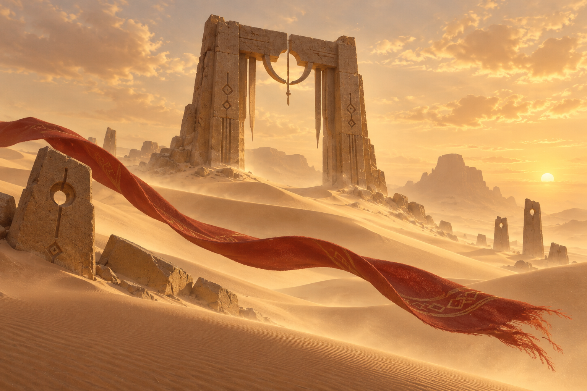

01 · CHAPTER GATES
Gates along the route
Preview: Wind Gate
Gate selection is a preview only.
JOURNEY · 2019 PC DIRECTION STUDY
Scene-led gates, named waypoints, and a brief companion signal. Sample actions stay local to this page.

01 · CHAPTER GATES
Gate selection is a preview only.
02 · JOURNEY PROGRESS
No percentage shown while total route length is unknown.
Progress changes only after an explicit crossing event.
03 · COMPANION SIGNALS
Pending: Chime · local example
No network connection is represented by this specimen.